Introductory example. Part 1.
15 may., 2020

Aim
FLBEIA provides a battery of tutorials for learning how to use this software. This tutorial is a practical guide about one simple implementation of FLBEIA. The aim of this example is to become familiar with the objects necessary to carry out bio-economic impact assessments of fisheries management strategies.
In this tutorial a simple example on how to run FLBEIA is presented. This simple example is named as one. The outputs of applaying FLBEIA to one example are analized, summarized and plotted. Once the user has understood the structure and outputs of FLBEIA, let’s start playing! We will run, plot and analyse several scenarios.
Finally, another simple example but with three iterations, named oneIt, is presented. In this example some exercises are proposed to be resolved by the user.
Help & Manual
FLBEIA includes extensive facilities for accessing documentation and searching for help. FLBEIA manual can be download from Github or within the ‘doc’ folder of the package installation. Additionally, the help() function and ? help operator in R provide access to the documentation pages. Typing help(package = FLBEIA) in the R console you access to the documentation for package FLBEIA , user guides and help pages. For example, typing help(bioSum) in the R console you access to help page of summary functions for the FLBEIA output.
The exact way to define the objects used to set the simulation is described in the FLBEIA manual. Nevertheless, the objects to set the simulation do not need to be defined for the following examples, as the datasets one and oneIt from the FLBEIA package will be used. For details on these objects, see FLBEIA manual, Section 5.2 or type ?FLBEIA in the R console.
To see all the datasets available in the FLBEIA package:
data(package='FLBEIA')Required packages to run this tutorial
To follow this tutorial you should have installed the following packages:
If you are using Windows, please use 64-bit R version because some of the packages do not work in 32-bit.
install.packages( c("ggplot2"))
install.packages( c("FLCore", "FLFleet", "FLBEIA", "ggplotFL",
"FLash", "FLAssess", "FLXSA"),
repos="http://flr-project.org/R")It has to be noted that packages FLCore, FLFleets and FLBEIA have to be installed in this exact order, as alternative orders can cause some problems.
The last version (not consolidated version -under development-) of FLBEIA can be installed from GitHub.
Load all the necessary packages.
# This chunk loads all necessary packages.
library(FLBEIA)
library(tidyr)GENERAL DESCRIPTION
Two examples are explored in this tutorial. In Example 1 we will play with dataset one. In this example the Operating Model is formed by a single age-structured stock. This stock is captured by one fleet whose activity is performed in an unique metier. The time step is annual with only one interation. The historic data go from 1990 to 2009 and projection period from 2010 to 2025.
- Operating model:
- Population dynamics: Age structured population growth
- Stock recruitment model: Beverthon and Holt
- Fleet dynamics: Simple Mixed Fisheries Behaviour
- Covariates dynamics: no covariates
- Management procedure:
- Observation: perfect observation
- Assessment: no assessment
- Management advice: ICES harvest control rule
In Example 2 dataset oneIt is used. Dataset oneIt is equal to one but with three iterations instead one.
EXAMPLE 1: One iteration.
Exploring the data
The required objects to run FLBEIA are available in the dataset one.
data(one) ls() command return a vector of character strings giving the names of the objects in the environment, in this case we can see the objects stored in one.
ls()character(0)Show the class of each of the objects with sapply function.
sapply(ls(), function(x) class(get(x)))named list()Below you can find the description of objects stored in one:
oneBio: A FLBiols object that contains biological information of stock stk1 (i.e. ‘real’ population within the OM).oneBioC: A list of settings that control the biological operating model. The growth function of stk1 is defined as Age Structured Population Growth (ASPG). The functionASPGdescribes the evolution of an age structured population using an exponential survival equation for existing age classes and a stock-recruitment relationship to generate the recruitment. In FLBEIA there are other alternative models available:fixedPopulationandBDPG.oneMainC: A list of settings to control the behaviour of FLBEIA function setting the initial and final year of the proyection period.oneFL: A FLFleetExt object that contains information relative to the fleetfl1(effort, costs, capacity…) and information relative to the metiermet1(effort share, variable costs, parameters of the Cobb Douglas function).oneFlC: A list of settings that control the fleet dynamics. The effort dynamics for fl1 is Simple Mixed fisheries behaviour (SMFB). The functionSMFBis a simplified version of the behavior of fleets that work in a mixed fisheries framework. It is seasonal and assumes that effort share among metiers is given as input parameter. There are also other effort models defined in FLBEIA (fixedEffort,SSFB,MaxProfit). In this example, capacity, catchability and price are given as input data and are unchanged within the simulation (fixedPrice). Summarizing, the fleet catches yearly exactly the advised TAC and there is no exit-entry of vessels in the fishery (fixedCapital).oneCv: List with all variables needed for the capital dynamics (fuel costs, capital costs, number of vessels, invest share, number of vessels, maximum fishing days by vessel…). However, in this case, the capital model is defined inoneFlCasfixedCapital(i.e. there is no any change in the capital dimension).oneCvC: A list of settings that control the capital dynamics. In this case, covariates are given as input data and are unchanged within the simulation (i.e.fixedCovar).oneAdv: List containing information on management advice; TAC and quota share.oneAdvC: A list of settings that control the behaviour of advice within the management procedure. It is a list with one element per stock. In this example the model isIcesHCR. The function represents the HCR used by ICES to generate TAC advice in the MSY framework. It is a biomass-based HCR, where the TAC advice depends on F in relation to several reference points.oneAssC: A list of settings that control the assessment. It is defined the name of the assessment model to be used for each stock. In the current example there is no asssessmentNoAssessment.oneObsC: A list of settings that control the observation process. AperfectObsmodel is defined in this case. This function does not introduce any observation uncertainty in the observation of the different quantities stored in theFLBiolsandFLFLeetsExtobjects.oneSR: Information on the stock recruitment relationship, not needed in the case of population aggregated in biomass. The model isbevholtAR1, a segmented regression stock-recruitment model with autoregressive normal log residuals of first order. There are several SR models available in FLR and FLBEIA:geomean,bevholt,ricker,segreg,shepherd,rickerAR1,segregAR1,cushing,bevholtSV,rickerSV,segregSV,shepherdSV,cushingSV,rickerCa,hockstick,redfishRecModelandctRec.
Run FLBEIA
In the code below FLBEIA is run with the arguments stored in dataset one. It takes less than a minute to run up to 2025.
s0 <- FLBEIA(biols = oneBio, # FLBiols object with one FLBiol element for stk1.
SRs = oneSR, # A list with one FLSRSim object for stk1.
BDs = NULL, # No Biomass dynamics populations in this case.
fleets = oneFl, # FLFleets object with one fleet.
covars = oneCv, # Covar is and object with aditional data on fleet
# (number of vessels, etc).
indices = NULL, # Indices not used
advice = oneAdv, # A list with two elements 'TAC' and 'quota.share'
main.ctrl = oneMainC, # A list with one element to define the start and
# end of the simulation.
biols.ctrl = oneBioC, # A list with one element to select the model to
# simulate the stock dynamics.
fleets.ctrl = oneFlC, # A list with several elements to select fleet dynamics
# models and store additional parameters.
covars.ctrl = oneCvC, # A list with several data related to the fleet.
obs.ctrl = oneObsC, # A list with one element to define how the stock
# observed ("PerfectObs").
assess.ctrl = oneAssC, # A list with one element to define how the stock
# assessment model used ("NoAssessment").
advice.ctrl = oneAdvC) # A list with one element to define how the TAC advice
# is obtained ("IcesHCR").FLBEIA function returns a list with several objects, let’s print the names of the objects and their classes.
names(s0) [1] "biols" "fleets"
[3] "covars" "advice"
[5] "stocks" "indices"
[7] "BDs" "SRs"
[9] "fleets.ctrl" "pkgs.versions"sapply(s0, function(x) class(x))$biols
[1] "FLBiols"
attr(,"package")
[1] "FLCore"
$fleets
[1] "FLFleetsExt"
attr(,"package")
[1] "FLBEIA"
$covars
[1] "list"
$advice
[1] "list"
$stocks
[1] "list"
$indices
[1] "NULL"
$BDs
[1] "NULL"
$SRs
[1] "list"
$fleets.ctrl
[1] "list"
$pkgs.versions
[1] "matrix" "array" Summarizing results
FLBEIA has several functions to summaryze the results in data frames (bioSum, fltSum, etc.). These data frames will allow us to use methods available in R to visualize and analyze the results. Information can be summarized in two formats:
- Long format: There is one column, named indicator, for storing the name of the indicator and a second column for the numeric value of the indicator. The long format is recommendable to work with
ggplot2functions. - Wide format: where each column corresponds to one indicator. The wide format is more efficient in terms of memory allocation and speed of computation.
The quantile version of the summaries, (bioSumQ, fltSumQ, etc.), returns the quantiles of indicators.
Summary functions
advSum, advSumQ: Data frame with indicators related to the management advice (TAC). Indicators are: “catch”, “discards”, “discRat”, “landings”, “quotaUpt” and “tac”.
bioSum, bioSumQ: Data frame with the biological indicators. Indicators are: “biomass”, “catch”, “catch.iyv”, “discards”, “disc.iyv”, “f”, “landings”, “land.iyv”, “rec” and “ssb”.
fltSum, fltSumQ: Data frame with indicators at fleet level. Indicators are: “capacity”, “catch”, “costs”, “discards”, “discRat”, “effort”, “fcosts”, “gva”, “grossValue”, “landings”, “fep”, “nVessels”, “price”, “grossSurplus”, “netProfit”, “quotaUpt”, “salaries”, “vcosts” and “profitability”. Definition of economics indicators:
- discRat: Discount rate.
- fcosts: fixed costs.
- grossValue: value of landings (landings x prices).
- Operating costs: Landing Fee x Gross value + Fuel cost x Effort + Other variable costs x effort + Fixed costs x Vessel.
- gva: Gross Value added = Gross value - Operating Costs.
- fep: Full equity profit defined as Gross Surplus - depreciation costs.
- grossSurplus: Gross value added - Labour costs, where Labour costs: share of the landings x Gross value + Fixed labour costs x Crew.
- Oportunity costs: Capital x interest rate free of risk.
- netProfit: fep - Oportunity costs.
- quotaUpt: Quota uptaken.
- profitability: grossSurplus/Gross Value.
fltStkSum, fltStkSumQ : Data frame with indicators at fleet and stock level. Indicators are: “landings”, “discards”, “catch”, “price”, “quotaUpt”, “tacshare”, “discRat” and “quota”.
npv: A data frame with the net present value per fleet over the selected range of years.
mtSum, mtSumQ : Data frame with indicators at fleet and metier level. Indicators are: “effshare”, “effort”, “income” and “vcost”.
mtStkSum, mtStkSumQ : Data frame with indicators at fleet, metier and stock level. Indicators are: “catch”, “discards”, “discRat”, “landings” and “price”.
riskSum: A data frame with the risk indicators. Indicators are: “pBlim”, “pBpa” and “pPrflim”.
vesselSum, vesselSumQ: Data frame with indicators at vessel level for each fleet. Indicators are: “catch”, “costs”, “discards”, “discRat”, “effort”, “fcosts”, “gva”, “income”, “landings”, “netProfit”, “price”, “profits”, “quotaUpt”, “salaries”, “vcosts” and “profitability”.
vesselStkSum, vesselStkSumQ: Data frame with indicators at vessel and stock level for each fleet. Indicators are: “landings”, “discards”, “catch”, “price”, “quotaUpt”, “tacshare”, “discRat” and “quota”.
summary_flbeia: An array with four dimensions: stock, year, iteration, indicator. Indicators are: “recruitment”, “ssb”, “f”, “biomass”, “catch”, “landings” and “discards”.
ecoSum_damara: ecoSum function built in the framework of Damara project.
Long format.
s0_bio <- bioSum(s0, long = TRUE) # Data frame (DF) of biological indicators.
s0_adv <- advSum(s0, long = TRUE) # DF of management advice (TAC).
s0$fleets <- setUnitsNA(s0$fleets)
s0_flt <- fltSum(s0, long = TRUE) # DF of economics indicators at fleet level.
s0_fltStk <- fltStkSum(s0, long = TRUE) # DF of indicators at fleet and stock level.
s0_mt <- mtSum(s0, long = TRUE) # DF of indicators at fleet and metier level.
s0_mtStk <- mtStkSum(s0, long = TRUE) # DF of indicators at fleet, metier and stock level.
s0_vessel <- vesselSum(s0, long = TRUE) # DF of indicators at vessel level.
s0_vesselStk <- vesselStkSum(s0, long = TRUE) # DF of indicators at vessel and stock level.
s0_npv <- npv(s0, y0 = '2014') # DF of net present value per fleet over the selected range of years.
s0_risk <- riskSum(s0, Bpa = c(stk1= 135000), Blim = c(stk1= 96000), Prflim = c(fl1 = 0))
# Exploring data frames
head(s0_bio); unique(s0_bio$indicator)
head(s0_adv); unique(s0_adv$indicator)
head(s0_flt); unique(s0_flt$indicator)
head(s0_fltStk); unique(s0_fltStk$indicator)
head(s0_mt); unique(s0_mt$indicator)
head(s0_mtStk); unique(s0_mtStk$indicator)
head(s0_vessel); unique(s0_vessel$indicator)
head(s0_vesselStk); unique(s0_vesselStk$indicator)
head(s0_risk); unique(s0_risk$indicator)Wide format.
s0_bio_w <- bioSum(s0, years = ac(2016:2020))
s0_adv_w <- advSum(s0, years = ac(2016:2020))
s0_flt_w <- fltSum(s0, years = ac(2016:2025))
s0_fltStk_w <- fltStkSum(s0, years = ac(2016:2020))
s0_mt_w <- mtSum(s0, years = ac(2016:2020))
s0_mtStk_w <- mtStkSum(s0, years = ac(2016:2020))
s0_vessel_w <- vesselSum(s0, years = ac(2016:2020))
s0_vesselStk_w <- vesselStkSum(s0, years = ac(2016:2020))
# Exploring data frames
head(s0_bio_w, 2)
head(s0_adv_w, 2)
head(s0_flt_w, 2)
head(s0_fltStk_w, 2)
head(s0_mt_w, 2)
head(s0_mtStk_w, 2)
head(s0_vessel_w, 2)
head(s0_vesselStk_w, 2)Plotting results
You can show results using the default plots in FLCore package.
plot(s0$biols[[1]])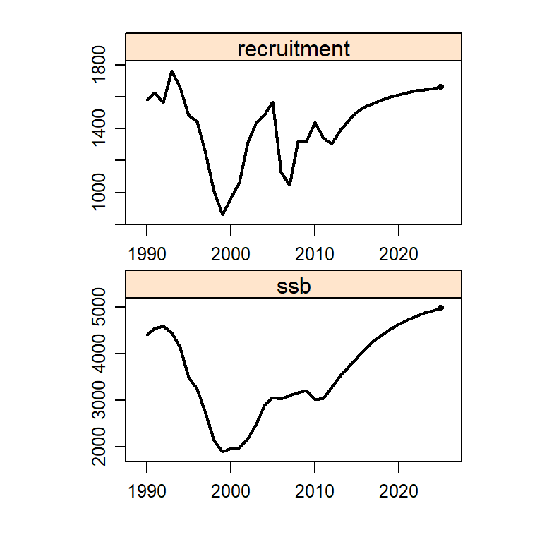
plot(s0$stocks[[1]])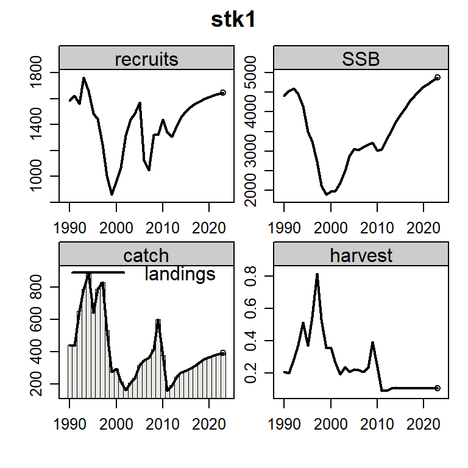
Additionally you can plot results using plotFLBiols, plotFLFleets and plotCatchFl. The plots will be saved in your working directory as a pdf file.
# set your own working directory.
# myWD <- "My working directory"
# setwd(myWD)
plotFLBiols(s0$biols, pdfnm="s0")
plotFLFleets(s0$fleets, pdfnm="s0")
plotEco(s0, pdfnm="s0")
plotfltStkSum(s0, pdfnm="s0")You can also use the function ggplot to generate additional figures.
aux <- subset(s0_bio, indicator=="catch" )
p <- ggplot(data=aux, aes(x=year, y=value, color=stock))+
geom_line()+
geom_vline(xintercept = 2016, linetype = "longdash")+
theme_bw()+
theme(text=element_text(size=8),
title=element_text(size=8,face="bold"),
strip.text=element_text(size=8))+
ylab("Catch (t)")
print(p)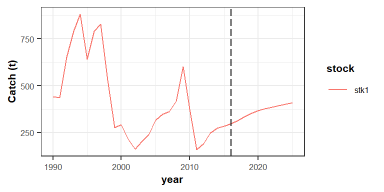
Let`s play
FLBEIA has several options to model the specific characteristics of a stock or a fishery. In particular, FLBEIA provides several options for population growth, effort dynamics, price models, capital dynamics, observation models and management advice. Let’s play with these options.
Operating model: Change stock-recruitment relationship.
In example one the stock recruitment model is bevholtAR1.
oneSR$stk1@model[1] "bevholtAR1"Replace the stock - recruitment relationship bevholtAR1 by segreg. Simulate it in a scenario called s1. segreg is a segmented regression stock-recruitment model. For this new simulation you need to estimate parameters of segreg model using the function fmle. fmle is a method that fits the SR model using logl and R’s optim model fitting through maximum likelihood estimation. For more details click here.
first.yr <- 1990
proj.yr <- 2010
last.yr <- 2025
yrs <- c(first.yr=first.yr,proj.yr=proj.yr,last.yr=last.yr)
stks <- c('stk1')
# As age 1 recruitment --> R_{y+1} = f(SSB_{y})
ssb <- ssb(oneBio[[1]])[,as.character(first.yr:(proj.yr-2)),1,1]
rec <- oneBio[[1]]@n[1,as.character((first.yr+1):(proj.yr-1)),]
sr.segreg <- fmle(FLSR(model="segreg", ssb = ssb, rec = rec))
# Introduce the new model and its parameters in SR object.
SRs.segreg <- oneSR
SRs.segreg[[1]]@params[,,,] <- sr.segreg@params[,]
SRs.segreg[[1]]@model <- 'segreg'
#Run FLBEIA with the new SR function.
s1 <- FLBEIA(biols = oneBio, SRs = SRs.segreg , BDs = NULL, fleets = oneFl, #covars = oneCv,
indices = NULL, advice = oneAdv, main.ctrl = oneMainC, biols.ctrl = oneBioC,
fleets.ctrl = oneFlC, covars.ctrl = oneCvC, obs.ctrl = oneObsC,
assess.ctrl = oneAssC, advice.ctrl = oneAdvC) plotFLBiols(s1$biols, pdfnm='s1')
plotFLFleets(s1$fleets, pdfnm='s1') Plot biomass of s0 (“bevholtAR1”) and biomass of s1 (“segreg”),
temp <- cbind(matrix(B_flbeia(s0)), matrix(B_flbeia(s1)))
matplot(temp, x = dimnames( B_flbeia(s1))$year, type = 'l',
xlab = 'Year', ylab = 'Biomass')
legend('top', c('s0', 's1'), col = c('black','red'), lty = c(1,2))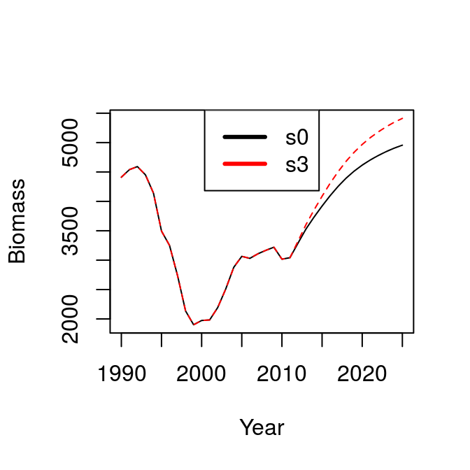
More plots using the function ggplot,
s1_bio <- bioSum(s1, long = TRUE)
s0_bio$scenario <- c('s0')
s1_bio$scenario <- c('s1')
s0_s1_bio <- rbind(s0_bio , s1_bio )
unique(s0_s1_bio$scenario)[1] "s0" "s1"head(s0_s1_bio)| stock | year | iter | scenario | indicator | value |
|---|---|---|---|---|---|
| stk1 | 1990 | 1 | s0 | biomass | 4411.354 |
| stk1 | 1991 | 1 | s0 | biomass | 4539.482 |
| stk1 | 1992 | 1 | s0 | biomass | 4591.823 |
| stk1 | 1993 | 1 | s0 | biomass | 4451.516 |
| stk1 | 1994 | 1 | s0 | biomass | 4140.226 |
| stk1 | 1995 | 1 | s0 | biomass | 3495.043 |
aux <- s0_s1_bio
aux$year <- as.numeric(as.character(aux$year))
p1 <- ggplot(data=aux , aes(x=year, y=value, color=scenario))+
geom_line()+
facet_wrap(~indicator, scales="free")+
geom_vline(xintercept = proj.yr, linetype = "longdash")+
theme_bw()+
theme(text=element_text(size=8),
title=element_text(size=8,face="bold"),
strip.text=element_text(size=8))+
ylab("Biological Indicators")
print(p1)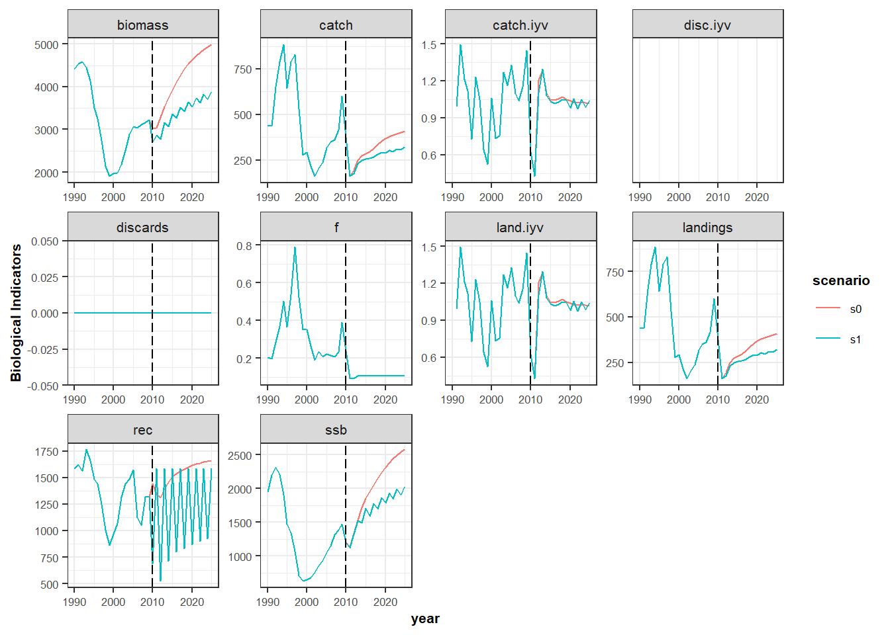
Natural mortality
Now for a second scenario (s2), increase by 20% the natural mortality of the ages 7 to 12.
oneBioM <- oneBio
oneBioM$stk1@m[7:12,,,,] <- oneBioM$stk1@m[7:12,,,,]*1.2
s2 <- FLBEIA(biols = oneBioM, SRs = oneSR , BDs = NULL, fleets = oneFl, # covars = oneCv,
indices = NULL, advice = oneAdv, main.ctrl = oneMainC, biols.ctrl = oneBioC,
fleets.ctrl = oneFlC, covars.ctrl = oneCvC, obs.ctrl = oneObsC,
assess.ctrl = oneAssC, advice.ctrl = oneAdvC) plotFLBiols(s1$biols, pdfnm='s2')
plotFLFleets(s1$fleets, pdfnm='s2') Compare the results or indicators for scenarios s0 and s2.
temp <- cbind(matrix(B_flbeia(s0)), matrix(B_flbeia(s2)))
matplot(temp, x = dimnames( B_flbeia(s0))$year, type = 'l', xlab = 'Year', ylab = 'Biomass')
legend('top', c('s0', 's2'), col = c('black','red'), lty = c(1,2))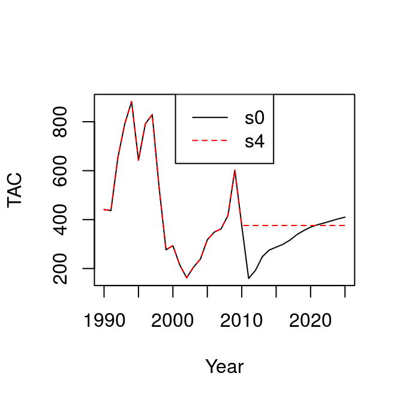
s2_bio <- bioSum(s2, long = TRUE)
s2_bio$scenario <- c('s2')
s0_s2_bio <- rbind(s0_bio , s2_bio )
unique(s0_s2_bio$scenario)[1] "s0" "s2"head(s0_s2_bio)| stock | year | iter | scenario | indicator | value |
|---|---|---|---|---|---|
| stk1 | 1990 | 1 | s0 | biomass | 4411.354 |
| stk1 | 1991 | 1 | s0 | biomass | 4539.482 |
| stk1 | 1992 | 1 | s0 | biomass | 4591.823 |
| stk1 | 1993 | 1 | s0 | biomass | 4451.516 |
| stk1 | 1994 | 1 | s0 | biomass | 4140.226 |
| stk1 | 1995 | 1 | s0 | biomass | 3495.043 |
aux <- s0_s2_bio
aux$year <- as.numeric(as.character(aux$year))
p1 <- ggplot(data=aux , aes(x=year, y=value, color=scenario))+
geom_line()+
facet_wrap(~indicator, scales="free")+
geom_vline(xintercept = proj.yr, linetype = "longdash")+
theme_bw()+
theme(text=element_text(size=8),
title=element_text(size=8,face="bold"),
strip.text=element_text(size=8))+
ylab("Biological Indicators")
print(p1)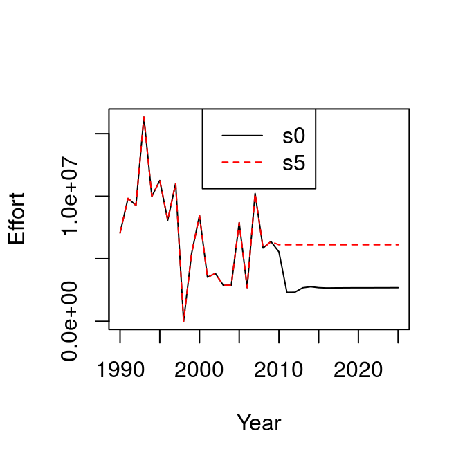
Harvest control rule
In scenario s3, change the harvest control rule target by decreasing by 20% the Fmsy value.
oneAdvC$stk1$ref.pts[3]
oneAdvC2 <- oneAdvC
oneAdvC2$stk1$ref.pts[3] <- oneAdvC$stk1$ref.pts[3]*0.8
s3 <- FLBEIA(biols = oneBio, SRs = oneSR , BDs = NULL, fleets = oneFl, #covars = oneCv,
indices = NULL, advice = oneAdv, main.ctrl = oneMainC, biols.ctrl = oneBioC,
fleets.ctrl = oneFlC, covars.ctrl = oneCvC, obs.ctrl = oneObsC,
assess.ctrl = oneAssC, advice.ctrl = oneAdvC2)Compare the results from s0 and s3.
s3_bio <- bioSum(s3, long = TRUE)
s3_bio$scenario <- c('s3')
s0_s3_bio <- rbind(s0_bio , s3_bio )
unique(s0_s3_bio$scenario)
head(s0_s3_bio)
aux <- s0_s3_bio
aux$year <- as.numeric(as.character(aux$year))
p1 <- ggplot(data=aux , aes(x=year, y=value, color=scenario))+
geom_line()+
facet_wrap(~indicator, scales="free")+
geom_vline(xintercept = proj.yr, linetype = "longdash")+
theme_bw()+
theme(text=element_text(size=8),
title=element_text(size=8,face="bold"),
strip.text=element_text(size=8))+
ylab("Biological Indicators")
print(p1)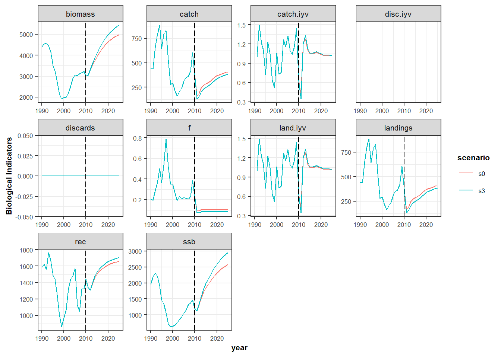
Harvest control rule (HCR). The HCR in scenario s0 is IcesHCR, this is the HCR used by ICES to generate TAC advice in the MSY framework. Now, run the scenario s4 with fixedAdvice HCR. fixedAdvice is a HCR that fixes the TAC independently to the stock status, and therefore TAC values should be given as input in the advice object. Set the new TAC as the mean of last three years prior to the projection period. Note that if the TAC it is not defined manually, it will be defined automatically in that way.
oneAdv$TACAn object of class "FLQuant"
, , unit = unique, season = all, area = unique
year
stock 1990 1991 1992 1993 1994 1995
stk1 441.18 437.07 652.45 790.52 882.92 642.83
year
stock 1996 1997 1998 1999 2000 2001
stk1 791.37 829.32 530.71 276.61 293.58 214.53
year
stock 2002 2003 2004 2005 2006 2007
stk1 162.08 205.71 238.70 317.59 348.80 362.29
year
stock 2008 2009 2010 2011 2012 2013
stk1 416.80 602.44 375.96 375.96 375.96 375.96
year
stock 2014 2015 2016 2017 2018 2019
stk1 375.96 375.96 375.96 375.96 375.96 375.96
year
stock 2020 2021 2022 2023 2024 2025
stk1 375.96 375.96 375.96 375.96 375.96 375.96
units: missing oneAdv2 <- oneAdv
TAC_mean <- mean(oneAdv$TAC[,ac(2007:2009),])
oneAdv2$TAC[,ac(2010:2025),] <- TAC_mean create.advice.ctrl function creates the advice control object. For a complete list of the function arguments, see FLBEIA manual.
There is another way to complet the TAC with the mean of the last three historic years when fixedAdvice is used. When fixedAdvice is set, create.advice.ctrl completes the TAC of projection years with the mean of the last three historic years.
?create.advice.ctrl # see function documentationHCR.models <- 'fixedAdvice'
oneAdvC1 <- create.advice.ctrl(stksnames = stks, HCR.models = HCR.models)
s4 <- FLBEIA(biols = oneBio, SRs = oneSR , BDs = NULL, fleets = oneFl, #covars = oneCv,
indices = NULL, advice = oneAdv, main.ctrl = oneMainC, biols.ctrl = oneBioC,
fleets.ctrl = oneFlC, covars.ctrl = oneCvC, obs.ctrl = oneObsC,
assess.ctrl = oneAssC, advice.ctrl = oneAdvC1) plotFLBiols(s4$biols,pdfnm= 's4')
plotFLFleets(s4$fleets,pdfnm= 's4') s4_bio <- bioSum(s4, long = TRUE)
s4_bio$scenario <- c('s4')
s0_s4_bio <- rbind(s0_bio , s4_bio )
unique(s0_s4_bio$scenario)
head(s0_s4_bio)
aux <- s0_s4_bio
aux$year <- as.numeric(as.character(aux$year))
p1 <- ggplot(data=aux , aes(x=year, y=value, color=scenario))+
geom_line()+
facet_wrap(~indicator, scales="free")+
geom_vline(xintercept = proj.yr, linetype = "longdash")+
theme_bw()+
theme(text=element_text(size=8),
title=element_text(size=8,face="bold"),
strip.text=element_text(size=8))+
ylab("Biological Indicators")
print(p1)Effort function.
In scenario s0 the effort dynamics is a Simple Mixed Fisheries Behaviour SMFB. In scenario s5 we can change that function to fixedEffort. In this function, all the parameters are given as input except discards and landings. The only task of this function is to update the discards and landings (total and at age) according to the catch production function specified in fleets.ctrl argument (e.g. oneFlC$fl1$effort.model), given the assumed effort.
oneFlC1 <- oneFlC
oneFlC1$fl1$effort.model <- 'fixedEffort'
oneFl$fl1@effort # Note that the effort of projection period is equal to the average effort of years 2007:2009.
s5 <- FLBEIA(biols = oneBio, SRs = oneSR , BDs = NULL, fleets = oneFl, #covars = oneCv,
indices = NULL, advice = oneAdv, main.ctrl = oneMainC, biols.ctrl = oneBioC,
fleets.ctrl = oneFlC1, covars.ctrl = oneCvC, obs.ctrl = oneObsC,
assess.ctrl = oneAssC, advice.ctrl = oneAdvC)
s5$fleets <- setUnitsNA(s5$fleets)
s0_flt <- fltSum(s0, long = TRUE); s0_eff <- subset(s0_flt, indicator == 'effort')
s5_flt <- fltSum(s5, long = TRUE); s5_eff <- subset(s5_flt, indicator == 'effort')
temp <- cbind(s0_eff$value, s5_eff$value)
matplot(temp, x = dimnames( B_flbeia(s0))$year, type = 'l', xlab = 'Year', ylab = 'Effort')
legend('top', c('s0', 's5'), col = c('black','red'), lty = c(1,2))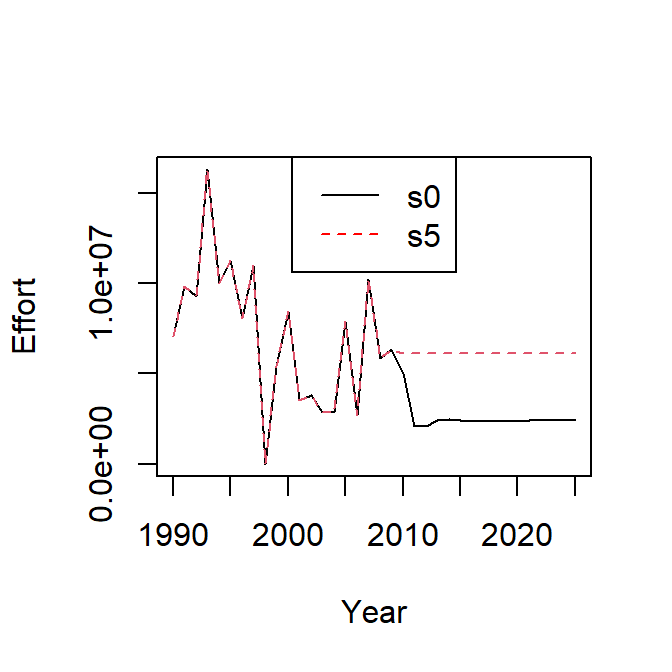
s5_flt <- fltSum(s5, long = TRUE)
s5_flt$scenario <- c('s5')
s0_flt$scenario <- c('s0')
s0_s5_flt <- rbind(s0_flt , s5_flt)
unique(s0_s5_flt$scenario)
head(s0_s5_flt)
aux <- s0_s5_flt
aux$year <- as.numeric(as.character(aux$year))
p1 <- ggplot(data=aux , aes(x=year, y=value, color=scenario))+
geom_line()+
facet_wrap(~indicator, scales="free")+
geom_vline(xintercept = proj.yr, linetype = "longdash")+
theme_bw()+
theme(text=element_text(size=8),
title=element_text(size=8,face="bold"),
strip.text=element_text(size=8))+
ylab("Economics Indicators")
print(p1)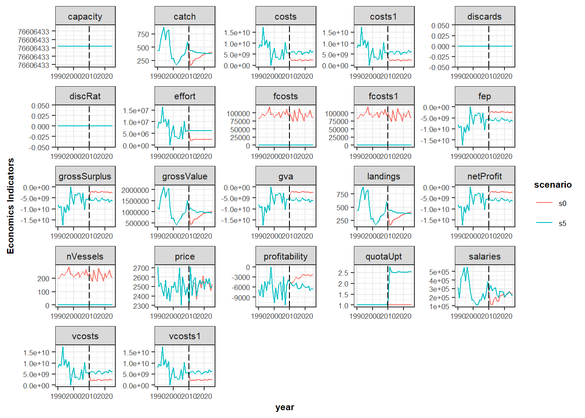
Price
In scenario s6, we increase by 40% the average price of the stock stk1.
oneFl1 <- oneFl
oneFl1$fl1@metiers$met1@catches$stk1@price <- oneFl$fl1@metiers$met1@catches$stk1@price*1.4
s6 <- FLBEIA(biols = oneBio, SRs = oneSR , BDs = NULL, fleets = oneFl1, #covars = oneCv,
indices = NULL, advice = oneAdv, main.ctrl = oneMainC, biols.ctrl = oneBioC,
fleets.ctrl = oneFlC, covars.ctrl = oneCvC, obs.ctrl = oneObsC,
assess.ctrl = oneAssC, advice.ctrl = oneAdvC)
s6$fleets <- setUnitsNA(s6$fleets)
s0_prof<- subset(s0_flt, indicator == 'grossValue')
s6_flt <- fltSum(s6, long = TRUE); s6_prof <- subset(s6_flt, indicator == 'grossValue')
temp <- cbind(s0_prof$value, s6_prof$value)
matplot(temp[21:36,], x = dimnames(B_flbeia(s6))$year[21:36], type = 'l',
xlab = 'Year', ylab = 'Income')
legend('bottom', c('s0', 's6'),col = c('black','red'), lty = c(1,2) )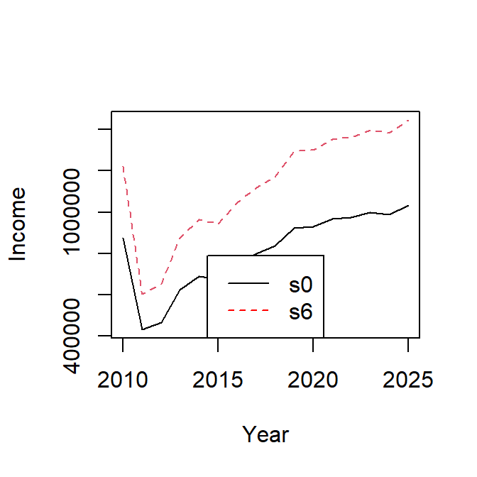
Economics indicators:
s6_flt <- fltSum(s6, long = TRUE)
s6_flt$scenario <- c('s6')
s0_flt$scenario <- c('s0')
s0_s6_flt <- rbind(s0_flt , s6_flt)
unique(s0_s6_flt$scenario)
head(s0_s6_flt)
aux <- s0_s6_flt
aux$year <- as.numeric(as.character(aux$year))
p1 <- ggplot(data=aux , aes(x=year, y=value, color=scenario))+
geom_line()+
facet_wrap(~indicator, scales="free")+
geom_vline(xintercept = proj.yr, linetype = "longdash")+
theme_bw()+
theme(text=element_text(size=8),
title=element_text(size=8,face="bold"),
strip.text=element_text(size=8))+
ylab("Economics Indicators")
print(p1)
Visualizing results with FLBEIAShiny
There is available R package FLBEIAShiny, to built an interactive web application for a smart visualizing of FLBEIA data and output. This package is currently available from Github.
scnms <-c('s0', 's1', 's2', 's3', 's4', 's5', 's6')
stknms <- unique(s0_bio$stock)
RefPts <- expand.grid(indicator=c("Bmsy", "Fmsy", "Bpa", "Blim", "Fpa", "Flim"),
scenario=scnms, stock=stknms, value=NA)[,c(3,2,1,4)]
RefPts$value <- c( c(800, 0.11, 800, 550, 0.25, 0.50), c(800, 0.2, 800, 550, 0.25, 0.50),
c(800, 0.2, 800, 550, 0.25, 0.50), c(800, 0.2, 800, 550, 0.25, 0.50),
c(800, 0.2, 800, 550, 0.25, 0.50), c(800, 0.2, 800, 550, 0.25, 0.50),
c(800, 0.2, 800, 550, 0.25, 0.50))
flbeiaObjs <- list( s0 = s0, s1 = s1, s2 = s2, s3 = s3,
s4 = s4, s5 = s5, s6 = s6)
flbeiaApp( flbeiaObjs = flbeiaObjs, RefPts = RefPts, years = ac(2000:2025),
calculate_npv = TRUE, npv.y0 = '2012', npv.yrs = ac(2013:2025)) EXAMPLE 2: three iterations.
This example is similar to the first example, but in this case we use objects with three iterations.
Load data
rm(list =ls()) # Clean the environment
data(oneIt)
ls()Run FLBEIA
Call to FLBEIA function with the arguments stored in oneIt dataset. The uncertainty is included exclusively in the recluitment and ssb in object oneItSR.
opts_chunk$set(message=FALSE)
s0_it <- FLBEIA(biols = oneItBio, SRs = oneItSR , BDs = NULL, fleets = oneItFl, #covars = oneItCv,
indices = NULL, advice = oneItAdv, main.ctrl = oneItMainC,
biols.ctrl = oneItBioC, fleets.ctrl = oneItFlC, covars.ctrl = oneItCvC,
obs.ctrl = oneItObsC, assess.ctrl = oneItAssC,
advice.ctrl = oneItAdvC) Summarizing results
s0_it$fleets <- setUnitsNA(s0_it$fleets)
s0_it_bio <- bioSum(s0_it, long = TRUE)
s0_it_adv <- advSum(s0_it, long = TRUE)
s0_it_flt <- fltSum(s0_it, long = TRUE)
s0_it_fltStk <- fltStkSum(s0_it, long = TRUE)
s0_it_mt <- mtSum(s0_it, long = TRUE)
s0_it_mtStk <- mtStkSum(s0_it, long = TRUE)
s0_it_vessel <- vesselSum(s0_it, long = TRUE)
s0_it_vesselStk <- vesselStkSum(s0_it, long = TRUE)
s0_it_npv <- npv(s0_it, y0 = '2014')
s0_it_risk <- riskSum(s0_it, Bpa = c(stk1= 135000), Blim = c(stk1= 96000),
Prflim = c(fl1 = 0))Create summary data frames (biological, economic, and catch information) for median and 90% confidence intervals (ie. quantiles 5, 50 and 95). There are several predeterminated functios to sumarize results of FLBEIA outputs taking into account the uncertainty.
proj.yr <- 2009
s0_it_bioQ <- bioSumQ(s0_it_bio)
s0_it_fltQ <- fltSumQ(s0_it_flt)Plotting results
Create several summary plots and save them in the working directory using ‘pdf’ format.
plotFLBiols(s0_it$biols, pdfnm='s0_it')
plotFLFleets(s0_it$fleets,pdfnm='s0_it')
plotEco(s0_it, pdfnm='s0_it')
plotfltStkSum(s0_it, pdfnm='s0_it')See the biomass and the profit time series with their uncertainty (90% confidence interval). In this case ggplot function is used.
aux <- subset(s0_it_bioQ, indicator=="biomass")
p <- ggplot(data=aux , aes(x=year, y=q50, color=stock))+
geom_line()+
geom_ribbon(aes(x=year, ymin=q05, ymax=q95, fill=stock), alpha=0.5)+
facet_wrap(~scenario, scales="free")+
geom_vline(xintercept = proj.yr, linetype = "longdash")+
theme_bw()+
theme(text=element_text(size=8),
title=element_text(size=8,face="bold"),
strip.text=element_text(size=8))+
ylab("Biomass (t)")
print(p)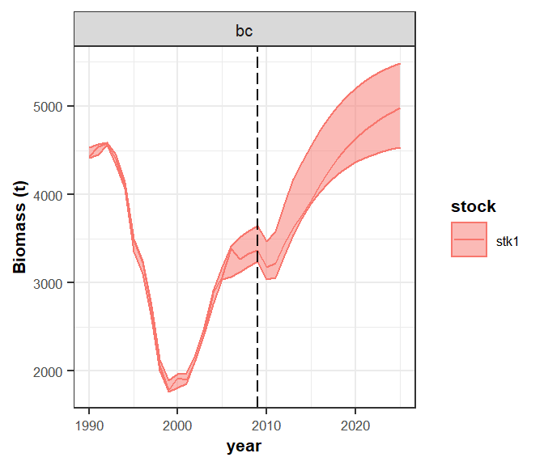
aux <- subset(s0_it_fltQ, indicator=="netProfit")
aux$year <- as.numeric(as.character(aux$year))
p1 <- ggplot(data=aux , aes(x=year, y=q50, color=fleet))+
geom_line()+
geom_ribbon(aes(x=year, ymin=q05, ymax=q95, fill=fleet), alpha=0.5)+
facet_wrap(~scenario, scales="free")+
geom_vline(xintercept = proj.yr, linetype = "longdash")+
theme_bw()+
theme(text=element_text(size=8),
title=element_text(size=8,face="bold"),
strip.text=element_text(size=8))+
ylab("netProfit")
print(p1)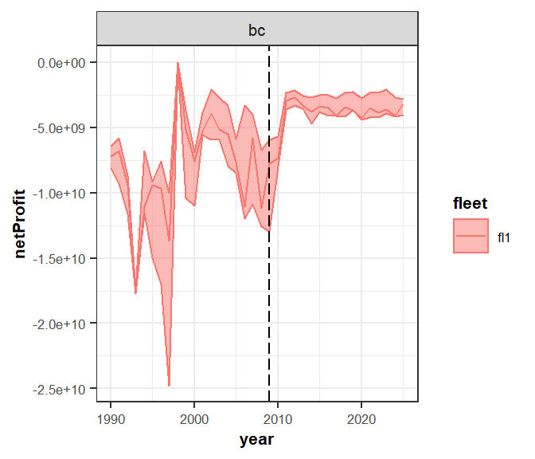
dev.off()Visualizing results with FLBEIAShiny
Use FLBEIAShiny to build an interactive web applications for visualizing data.
scnms <-c('s0_it')
stknms <- unique(s0_it_bio$stock)
RefPts <- expand.grid(indicator=c("Bmsy", "Fmsy", "Bpa", "Blim", "Fpa", "Flim"),
scenario=scnms, stock=stknms, value=NA)[,c(3,2,1,4)]
RefPts$value <- c(c(800, 0.11, 800, 550, 0.25, 0.50))
flbeiaObjs <- list( s0_it = s0_it)
flbeiaApp( flbeiaObjs = flbeiaObjs, RefPts = RefPts, years = ac(2000:2025),
calculate_npv = TRUE, npv.y0 = '2012', npv.yrs = ac(2013:2025)) EXERCISES
Run the following scenarios and compare them with the baseline scenario (s0_it). The comparison should be done numerically and/or plotting scenarios results.
- s1_it: Population growth: Change stock-recruitment relationship.
- s2_it: Natural mortality: Increase the natural mortality by 25% for ages 2 to 6.
- s3_it: Harvest control rule: Use
FroeseHCR. - s4_it: Effort dynamics: Use
MaxProfiteffort function. - s6_it: Price dynamics: Decrease by 15% the price of the recruits.
- s6_it: Fleet dynamics: The legislation has changed and the mesh size of the vessel will be changed, decreasing the catchability of vessels by 10%. What will be the biological and economics impacts of this legislation?
- s7_it: Effort dynamics: Change the effort dynamics from
SMFBtofixed effort(the mean of the las three historic years) and compare de SSB resulted from this simulation with de baseline scenario.
More information
- You can submit bug reports, questions or suggestions on this tutorial at https://github.com/flr/doc/issues.
- Or send a pull request to https://github.com/flr/doc/
- For more information on the FLR Project for Quantitative Fisheries Science in R, visit the FLR webpage, http://flr-project.org.
- You can submit bug reports, questions or suggestions specific to FLBEIA to flbeia@azti.es.
Software Versions
- R version 4.0.0 (2020-04-24)
- FLCore: 2.6.15
- FLBEIA: 1.15.4
- FLFleet: 2.6.1
- FLash: 2.5.11
- FLAssess: 2.6.3
- FLXSA: 2.6.4
- ggplotFL: 2.6.7.9006
- ggplot2: 3.3.0
- Compiled: Fri May 15 06:50:31 2020
License
This document is licensed under the Creative Commons Attribution-ShareAlike 4.0 International license.